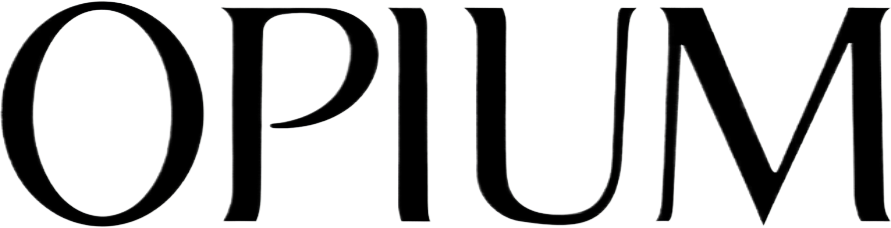
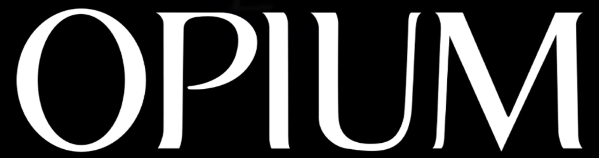

생 로랑 Yves Saint Laurent
생 로랑(Yves Saint Laurent)은 1961년 파리에서 설립된 프랑스 럭셔리 패션 하우스이다.
최종 업데이트

생 로랑은 어떤 브랜드인가
생 로랑(Saint Laurent)은 디자이너 이브 생 로랑(Yves Saint Laurent)이 동반자 피에르 베르제와 함께 1961년 파리에서 설립한 프랑스 럭셔리 하우스다. 1966년 여성용 턱시도 '르 스모킹(Le Smoking)'으로 여성복의 경계를 다시 그렸으며, 현재는 케어링(Kering) 그룹 산하에서 안토니 바카렐로 체제로 운영되는 모드의 상징이다.
생 로랑은 어떻게 봐야 할까
케어링 포트폴리오에서 매출 1위 구찌가 부진한 사이, 생 로랑은 그룹의 두 번째 핵심 축으로 자리 잡았다. 막시멀리즘으로 흔들린 구찌, 미니멀 시크를 내세운 셀린과 달리 생 로랑은 1966년 '르 스모킹'에서 비롯된 날렵한 블랙 테일러링과 록 시크라는 일관된 코드를 유지한다.
안토니 바카렐로는 합류 10년 가까이 이 정체성을 지켜 2025년 리스트 인덱스에서 '가장 뜨거운 브랜드' 1위에 올랐다. 한국에서는 블랙핑크 로제를 의류와 뷰티 글로벌 앰배서더로 기용해 2030 세대 사이에서 영향력을 키우고 있으며, 파리 컬렉션 참석 등으로 화제를 모은다.
생 로랑은 어떻게 시작되고 성장했나
이브 생 로랑은 디올에서 크리스티앙 디올의 후임 수석 디자이너로 이름을 알린 뒤, 1961년 연인이자 사업 파트너 피에르 베르제와 함께 자신의 오트 쿠튀르 하우스를 세웠고 1962년 1월 첫 컬렉션을 발표했다. 1966년에는 여성을 위한 턱시도 '르 스모킹'을 선보여 논란과 찬사를 동시에 받았고, 같은 해 파리 좌안에 기성복 부티크 '리브 고슈(Rive Gauche)'를 열어 럭셔리 기성복 대중화를 이끌었다.
1999년 구찌 그룹(훗날 케어링, 당시 PPR)에 편입되며 톰 포드와 스테파노 필라티를 거쳤고, 2012년 에디 슬리먼이 라인명을 '생 로랑'으로 바꾼 뒤 2016년부터 안토니 바카렐로가 크리에이티브 디렉터를 맡아 하우스를 이끌고 있다.
생 로랑의 브랜드 아이덴티티는 무엇인가
하우스의 정체성은 여성에게 남성복의 권위를 입혀 해방의 언어로 바꾼 데서 출발한다. 1961년 그래픽 디자이너 카상드르(Cassandre)가 Y·S·L 세 글자를 세로로 엮어 만든 모노그램은 흑백으로 단순화되며 지금까지 하우스의 상징으로 쓰인다.
블랙을 중심으로 한 절제된 팔레트, 날카로운 테일러링, 록 시크 무드가 핵심이며, 도시적이고 자기 확신이 강한 남녀를 타깃으로 한다. 브랜드 보이스는 군더더기 없이 단호하다.
생 로랑의 대표 제품과 서비스는 무엇인가
대표 핸드백으로는 셰브런 퀼팅과 YSL 로고가 상징인 '루루(Loulou)', 스터드 장식의 '케이트(Kate)'가 있으며, 루루는 약 이백만 원대부터 시작한다. 창업자의 유산인 여성 턱시도 라인과 의류·슈즈, 그리고 로레알이 전개하는 향수·메이크업 등 뷰티가 주요 카테고리다.
직영 부티크와 백화점, 공식 온라인을 통해 유통된다.
생 로랑은 지금 어떤 상태인가
모회사는 프랑스 케어링(Kering) 그룹이며 본사는 파리에 있다. 크리에이티브 디렉터는 2016년 합류한 안토니 바카렐로다.
2024년 매출은 전년 대비 9% 줄어든 약 29억 유로로, 그룹 전체 매출 약 172억 유로 가운데 매출 약 77억 유로의 구찌에 이은 핵심 브랜드 위치를 지킨다. 2025년 11월에는 파리 몽테뉴가에 새 플래그십을 열었다.
생 로랑 연혁 — 주요 사건은 언제였나
생 로랑 로고는 어떻게 변해왔나
대표 로고대표 브랜드 마크
BI/CI 아카이브보관 이미지 1
BI/CI 아카이브 2보관 이미지 2자주 묻는 질문
생 로랑는 어느 나라 브랜드인가요?
생 로랑는 프랑스의 패션·럭셔리 브랜드입니다.
생 로랑는 언제 설립되었나요?
생 로랑는 1961년 설립되었습니다.
생 로랑의 브랜드 아이덴티티는 무엇인가요?
하우스의 정체성은 여성에게 남성복의 권위를 입혀 해방의 언어로 바꾼 데서 출발한다.
생 로랑의 대표 제품은 무엇인가요?
대표 핸드백으로는 셰브런 퀼팅과 YSL 로고가 상징인 '루루(Loulou)', 스터드 장식의 '케이트(Kate)'가 있으며, 루루는 약 이백만 원대부터 시작한다.
생 로랑는 현재 어떤 상태인가요?
모회사는 프랑스 케어링(Kering) 그룹이며 본사는 파리에 있다.
생 로랑의 창업자는 누구인가요?
생 로랑의 창업자는 이브 생로랑, Pierre Bergé입니다(위키데이터 기준).
생 로랑의 본사는 어디에 있나요?
생 로랑의 본사는 파리에 있습니다(위키데이터 기준).
출처와 검증
생 로랑 관련 참고: 공식 웹사이트 · 위키데이터 Q2282172 · 한국어 위키백과 · 영어 위키백과. 브랜드명은 한글과 원어를 함께 표기하되 데이터에 없는 표기는 만들지 않습니다. 기원 국가·설립연도는 검수된 정의문에서 확인된 값을 우선하고, 없을 때만 공식 웹사이트 URL이 일치하는 위키데이터 개체의 값을 씁니다. 위키데이터 값은 2026-09-07 기준입니다.